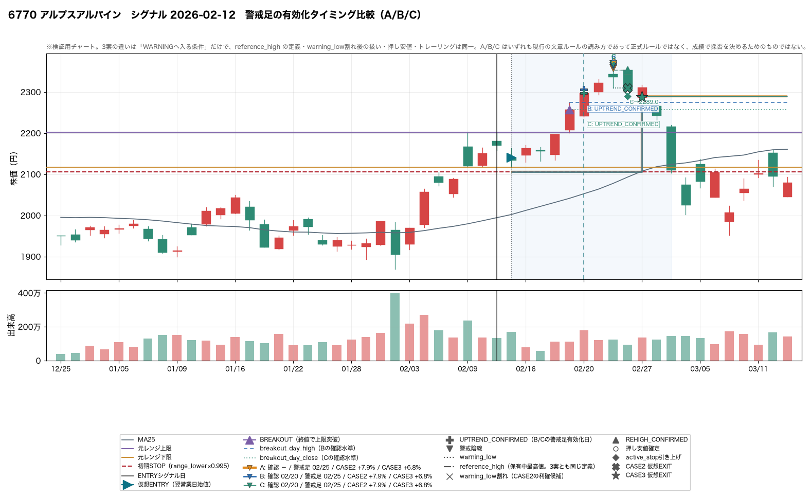
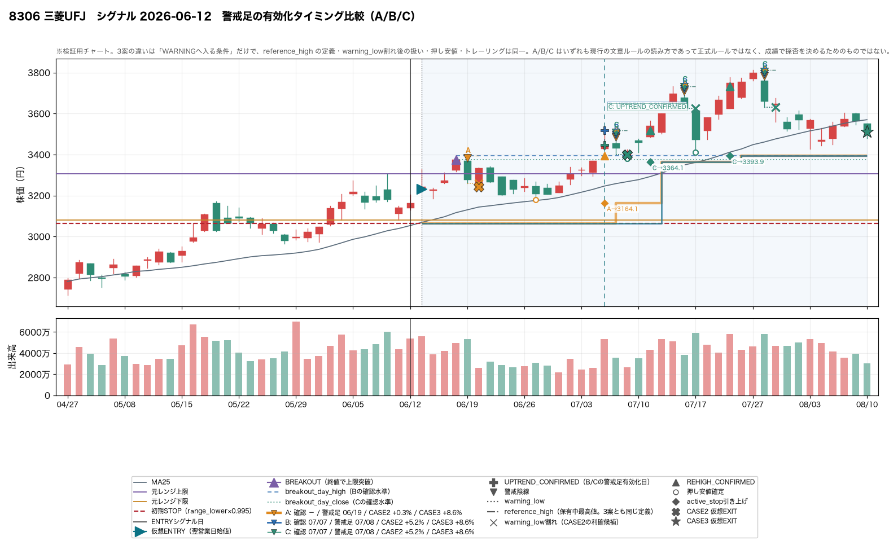
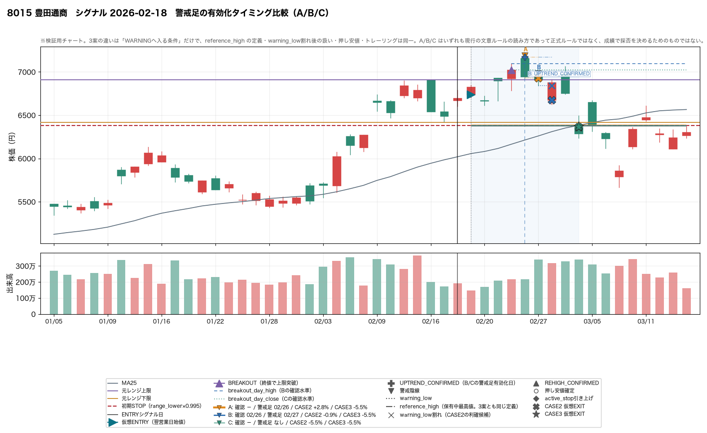
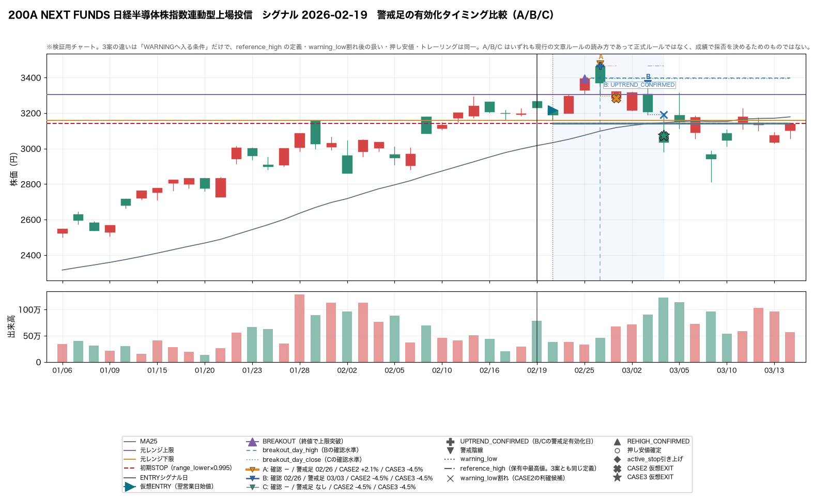
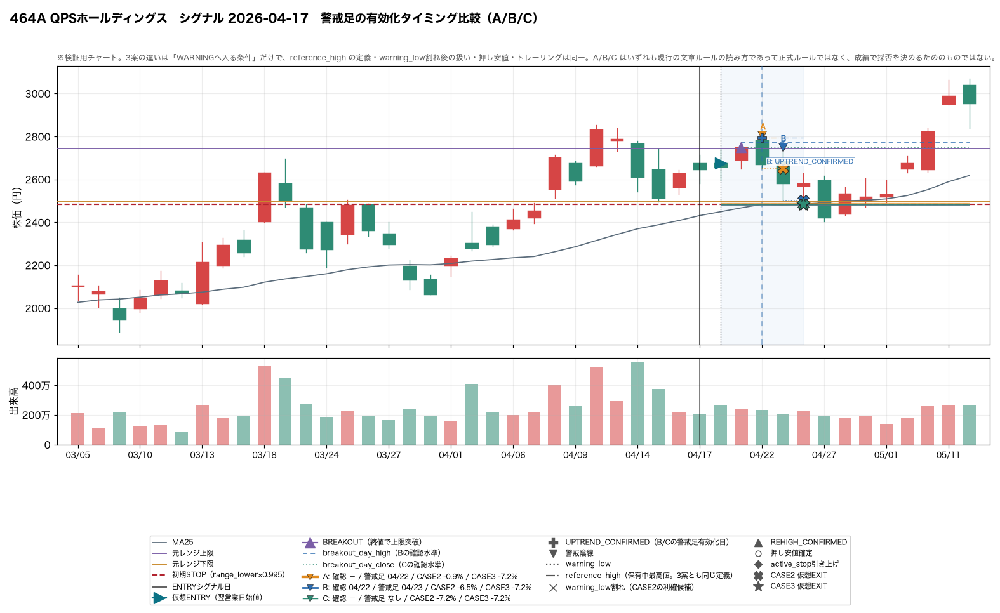
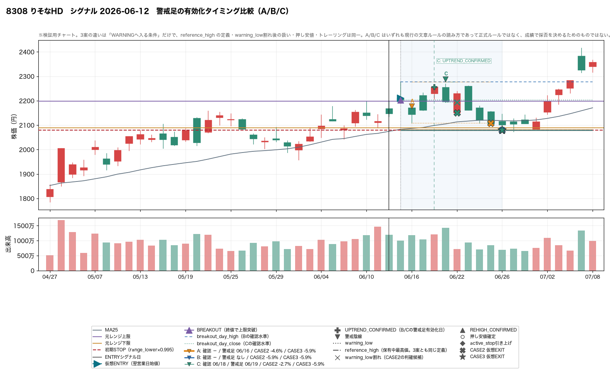
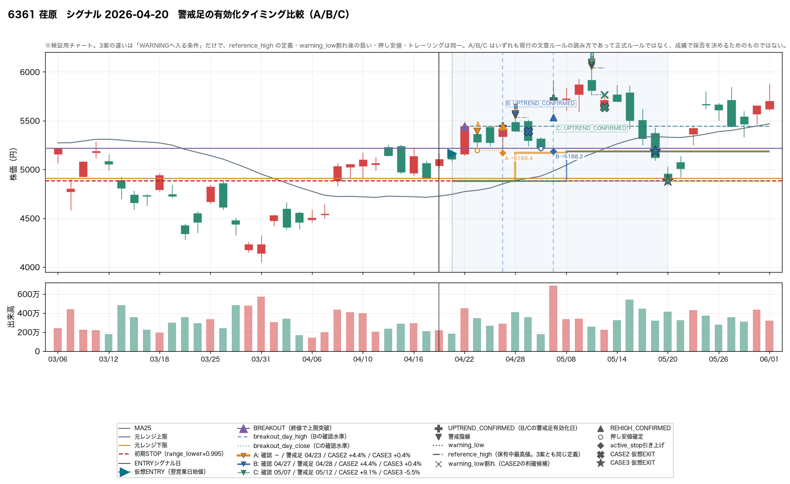
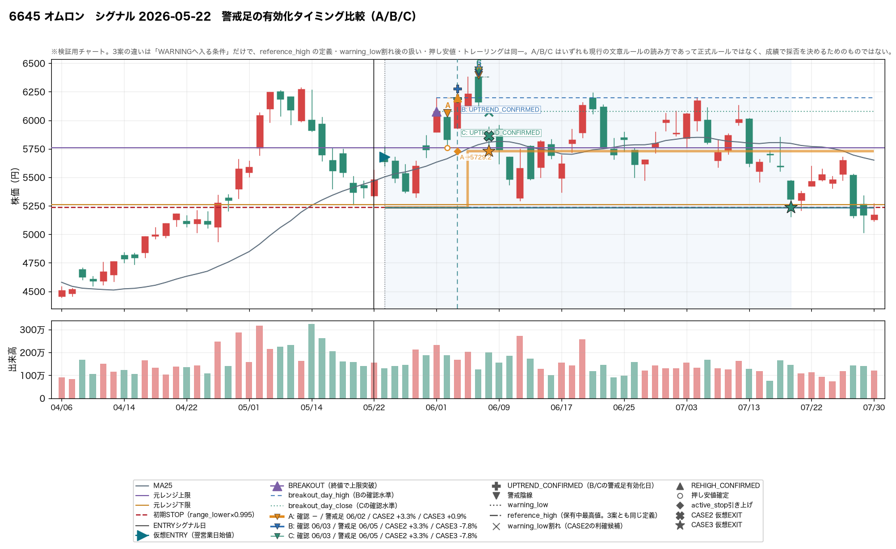
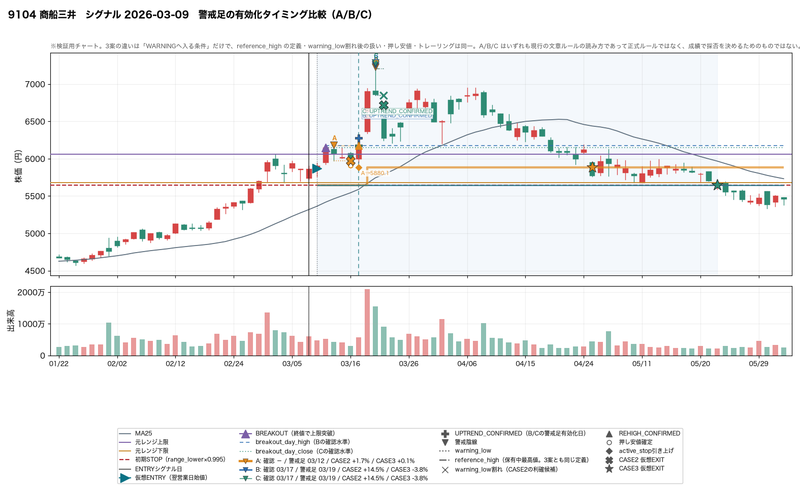

警戒陰線を「いつ有効化するか」の比較検証（VARIANT A / B / C）
検証期間 2026-02-12 〜 2026-07-22 ／
対象 near.max_position_in_range = 0.65 で発生した ENTRY_CANDIDATE
32 件（仮想ENTRY成立 32 件）× 3 案 ／
生成日 2026-08-11
このレポートの読み方（先に必ず読むこと）
- 今回変えたのは「WARNING へ入る条件」だけ。
reference_high の定義（＝警戒足発生時点までの保有中最高値）、
warning_low 割れ後に CASE3 が WARNING に留まる挙動、
押し安値の取り方、トレーリング、初期STOP、ENTRY ロジック、
near.max_position_in_range = 0.65 は
3 案とも完全に同一で、今回いっさい触っていない。
- A/B/C はいずれも現行の文章ルールの読み方であって、正式ルールではない。
「最も仮想リターンが高い案を採用する」という使い方はしない。
- これは収益バックテストではない。
見たいのは「上昇波の途中にある意味のある調整を、どの開始条件が最も自然に
表現しているか」であって、勝ち負けではない。
- 新しい数値閾値を探索していない。 B は
high > breakout_day_high、C は
close > breakout_day_close だけで、調整幅も日数もパラメータを置いていない。
- 母数 32 件（上限突破は 22 件、+10% まで伸びたのは 6 件）と小さい。
率は参考程度に留めること。
- 約定価格は保証されない。
warning_low も
active_stop も、寄りがその水準を割っていれば始値を参考価格にしている。
1. 比較する 3 案
VARIANT A 現行案（比較基準）
（確認を挟まない）- 元レンジ上限を終値突破した翌営業日から陰線を拾う
- 確認を挟まないので、突破の翌日に出た普通の陰線がそのまま警戒足になる
- 前回の
exit_state_machine と完全に同じ挙動
VARIANT B 高値更新確認後
high > breakout_day_high- 突破後に
high > breakout_day_high を満たした日を UPTREND_CONFIRMED とする - その翌営業日以降の最初の陰線を警戒足にする
- 確認日そのものが陰線でも警戒足には使わない（§11。件数は下に記載）
VARIANT C 終値上昇確認後
close > breakout_day_close- 突破後に
close > breakout_day_close を満たした日を UPTREND_CONFIRMED とする - その翌営業日以降の最初の陰線を警戒足にする
- 確認日が「終値は上だが陰線」というケースも警戒足には使わない（§11）
ループ内での再武装について（解釈(d)）。再高値更新（REHIGH_CONFIRMED）で TREND_HOLD に戻ったあとは、その日が定義上すでに「さらに上へ進んだ日」なので、B/C でも確認ゲートを課さず A と同じく翌営業日から警戒足を拾う。B ではこの扱いは無条件に自明（再高値更新日は必ず breakout_day_high を超えている）だが、C では「再高値更新日の終値が breakout_day_close 以下」ということが起こり得るため、その件数を rehigh_days_failing_own_confirm として記録している。
2. 横並び比較（§5 WARNING発生状況 / §6 決着 / §7 トレーリング / §12 利益保持）
3. §8 早すぎる警戒足 — A では割れるが B/C ではまだ WARNING でなかった件
「割れ翌日以降の最大含み益」は、A が warning_low で降りた翌営業日以降に、その案がまだ保有していた期間中に付けた最大含み益。そこで降りられたという意味ではない。実際にその案が得た結果は右端 2 列で、CASE2 と CASE3 で逆方向に動いている行があることに注意（人間がチャートで見るための材料）。
4. §9 遅すぎる警戒足 — 遅らせたことで守れなくなった件
§8 と §9 は表裏である。どちらか一方だけを見て開始条件を決めない。
両方の件数と大きさを並べて、人間がチャートで確かめるための材料にする。
5. §10 B と C の違い
| 区分 | 件数 | 内容 |
|---|
| B・C とも確認成立 | 13/22 (59%) | 6770 2026-02-12, 6770 2026-02-16, 2644 2026-02-18, 1802 2026-02-19, 6594 2026-02-19, 8058 2026-02-19… |
| B だけ確認成立 | 3/22 (14%) | 8015 2026-02-18, 200A 2026-02-19, 464A 2026-04-17 |
| C だけ確認成立 | 1/22 (5%) | 8308 2026-06-12 |
| どちらも成立しない | 5/22 (23%) | 8306 2026-02-18, 8316 2026-02-18, 6594 2026-05-29, 7182 2026-06-09, 2644 2026-07-09 |
| うち同日成立 | 11/13 (85%) | 分母は B・C とも成立した 13 件 |
| うち B が先 | 2/13 (15%) | 分母は B・C とも成立した 13 件 |
| うち C が先 | 0/13 (0%) | 分母は B・C とも成立した 13 件 |
6. イベント別の並び
「最大含み益」は 3 案の保有期間の和で取った案に依存しない値。
「trail」は active_stop を引き上げた回数。
7. §13 代表チャート
1 枚に A/B/C を重ねている。オレンジ = A / 青 = B / 緑 = C。
太い線ほど下に描かれるので、3 案の active_stop が重なっていても見える。
Aは突破翌日の陰線をWARNINGにするが、B/Cならその後も上昇した例

9104 商船三井 シグナル 2026-03-09
A: 確認 － / 警戒足 2026-03-12 / trail 1 回 / CASE2 +1.7% / CASE3 +0.1%
B: 確認 2026-03-17 / 警戒足 2026-03-19 / trail 0 回 / CASE2 +14.5% / CASE3 -3.8%
C: 確認 2026-03-17 / 警戒足 2026-03-19 / trail 0 回 / CASE2 +14.5% / CASE3 -3.8%

8306 三菱UFJ シグナル 2026-06-12
A: 確認 － / 警戒足 2026-06-19 / trail 3 回 / CASE2 +0.3% / CASE3 +8.6%
B: 確認 2026-07-07 / 警戒足 2026-07-08 / trail 2 回 / CASE2 +5.2% / CASE3 +8.6%
C: 確認 2026-07-07 / 警戒足 2026-07-08 / trail 2 回 / CASE2 +5.2% / CASE3 +8.6%

6361 荏原 シグナル 2026-04-20
A: 確認 － / 警戒足 2026-04-23 / trail 2 回 / CASE2 +4.4% / CASE3 +0.4%
B: 確認 2026-04-27 / 警戒足 2026-04-28 / trail 1 回 / CASE2 +4.4% / CASE3 +0.4%
C: 確認 2026-05-07 / 警戒足 2026-05-12 / trail 0 回 / CASE2 +9.1% / CASE3 -5.5%
Bが自然に機能した例（確認 → 調整 → 押し安値確定）

8306 三菱UFJ シグナル 2026-06-12
A: 確認 － / 警戒足 2026-06-19 / trail 3 回 / CASE2 +0.3% / CASE3 +8.6%
B: 確認 2026-07-07 / 警戒足 2026-07-08 / trail 2 回 / CASE2 +5.2% / CASE3 +8.6%
C: 確認 2026-07-07 / 警戒足 2026-07-08 / trail 2 回 / CASE2 +5.2% / CASE3 +8.6%

6770 アルプスアルパイン シグナル 2026-02-12
A: 確認 － / 警戒足 2026-02-25 / trail 1 回 / CASE2 +7.9% / CASE3 +6.8%
B: 確認 2026-02-20 / 警戒足 2026-02-25 / trail 1 回 / CASE2 +7.9% / CASE3 +6.8%
C: 確認 2026-02-20 / 警戒足 2026-02-25 / trail 1 回 / CASE2 +7.9% / CASE3 +6.8%
Cが自然に機能した例

8306 三菱UFJ シグナル 2026-06-12
A: 確認 － / 警戒足 2026-06-19 / trail 3 回 / CASE2 +0.3% / CASE3 +8.6%
B: 確認 2026-07-07 / 警戒足 2026-07-08 / trail 2 回 / CASE2 +5.2% / CASE3 +8.6%
C: 確認 2026-07-07 / 警戒足 2026-07-08 / trail 2 回 / CASE2 +5.2% / CASE3 +8.6%

6770 アルプスアルパイン シグナル 2026-02-12
A: 確認 － / 警戒足 2026-02-25 / trail 1 回 / CASE2 +7.9% / CASE3 +6.8%
B: 確認 2026-02-20 / 警戒足 2026-02-25 / trail 1 回 / CASE2 +7.9% / CASE3 +6.8%
C: 確認 2026-02-20 / 警戒足 2026-02-25 / trail 1 回 / CASE2 +7.9% / CASE3 +6.8%
B/CともWARNINGが遅すぎた例（確認前に落ちた）

8015 豊田通商 シグナル 2026-02-18
A: 確認 － / 警戒足 2026-02-26 / trail 0 回 / CASE2 +2.8% / CASE3 -5.5%
B: 確認 2026-02-26 / 警戒足 2026-02-27 / trail 0 回 / CASE2 -0.9% / CASE3 -5.5%
C: 確認 － / 警戒足 なし / trail 0 回 / CASE2 -5.5% / CASE3 -5.5%

200A NEXT FUNDS 日経半導体株指数連動型上場投信 シグナル 2026-02-19
A: 確認 － / 警戒足 2026-02-26 / trail 0 回 / CASE2 +2.1% / CASE3 -4.5%
B: 確認 2026-02-26 / 警戒足 2026-03-03 / trail 0 回 / CASE2 -4.5% / CASE3 -4.5%
C: 確認 － / 警戒足 なし / trail 0 回 / CASE2 -4.5% / CASE3 -4.5%
BとCでWARNING日が大きく違う例

464A QPSホールディングス シグナル 2026-04-17
A: 確認 － / 警戒足 2026-04-22 / trail 0 回 / CASE2 -0.9% / CASE3 -7.2%
B: 確認 2026-04-22 / 警戒足 2026-04-23 / trail 0 回 / CASE2 -6.5% / CASE3 -7.2%
C: 確認 － / 警戒足 なし / trail 0 回 / CASE2 -7.2% / CASE3 -7.2%

8308 りそなHD シグナル 2026-06-12
A: 確認 － / 警戒足 2026-06-16 / trail 0 回 / CASE2 -4.6% / CASE3 -5.9%
B: 確認 － / 警戒足 なし / trail 0 回 / CASE2 -5.9% / CASE3 -5.9%
C: 確認 2026-06-18 / 警戒足 2026-06-19 / trail 0 回 / CASE2 -2.7% / CASE3 -5.9%
警戒開始を遅らせたことでtrailが成立した例
該当なし。これ自体が結果である: 32 件のなかに「A では trail が立たないが B/C なら立つ」ケースは 1 件も無かった。
逆に、遅らせたことでtrailが成立しなくなった例

9104 商船三井 シグナル 2026-03-09
A: 確認 － / 警戒足 2026-03-12 / trail 1 回 / CASE2 +1.7% / CASE3 +0.1%
B: 確認 2026-03-17 / 警戒足 2026-03-19 / trail 0 回 / CASE2 +14.5% / CASE3 -3.8%
C: 確認 2026-03-17 / 警戒足 2026-03-19 / trail 0 回 / CASE2 +14.5% / CASE3 -3.8%

6361 荏原 シグナル 2026-04-20
A: 確認 － / 警戒足 2026-04-23 / trail 2 回 / CASE2 +4.4% / CASE3 +0.4%
B: 確認 2026-04-27 / 警戒足 2026-04-28 / trail 1 回 / CASE2 +4.4% / CASE3 +0.4%
C: 確認 2026-05-07 / 警戒足 2026-05-12 / trail 0 回 / CASE2 +9.1% / CASE3 -5.5%
遅らせてもSTUCK_IN_WARNINGになる例

9104 商船三井 シグナル 2026-03-09
A: 確認 － / 警戒足 2026-03-12 / trail 1 回 / CASE2 +1.7% / CASE3 +0.1%
B: 確認 2026-03-17 / 警戒足 2026-03-19 / trail 0 回 / CASE2 +14.5% / CASE3 -3.8%
C: 確認 2026-03-17 / 警戒足 2026-03-19 / trail 0 回 / CASE2 +14.5% / CASE3 -3.8%

6645 オムロン シグナル 2026-05-22
A: 確認 － / 警戒足 2026-06-02 / trail 1 回 / CASE2 +3.3% / CASE3 +0.9%
B: 確認 2026-06-03 / 警戒足 2026-06-05 / trail 0 回 / CASE2 +3.3% / CASE3 -7.8%
C: 確認 2026-06-03 / 警戒足 2026-06-05 / trail 0 回 / CASE2 +3.3% / CASE3 -7.8%
+10%以上伸びた代表ケース

9104 商船三井 シグナル 2026-03-09
A: 確認 － / 警戒足 2026-03-12 / trail 1 回 / CASE2 +1.7% / CASE3 +0.1%
B: 確認 2026-03-17 / 警戒足 2026-03-19 / trail 0 回 / CASE2 +14.5% / CASE3 -3.8%
C: 確認 2026-03-17 / 警戒足 2026-03-19 / trail 0 回 / CASE2 +14.5% / CASE3 -3.8%

8306 三菱UFJ シグナル 2026-06-12
A: 確認 － / 警戒足 2026-06-19 / trail 3 回 / CASE2 +0.3% / CASE3 +8.6%
B: 確認 2026-07-07 / 警戒足 2026-07-08 / trail 2 回 / CASE2 +5.2% / CASE3 +8.6%
C: 確認 2026-07-07 / 警戒足 2026-07-08 / trail 2 回 / CASE2 +5.2% / CASE3 +8.6%
初期STOPまで戻った代表ケース

9104 商船三井 シグナル 2026-03-09
A: 確認 － / 警戒足 2026-03-12 / trail 1 回 / CASE2 +1.7% / CASE3 +0.1%
B: 確認 2026-03-17 / 警戒足 2026-03-19 / trail 0 回 / CASE2 +14.5% / CASE3 -3.8%
C: 確認 2026-03-17 / 警戒足 2026-03-19 / trail 0 回 / CASE2 +14.5% / CASE3 -3.8%

6361 荏原 シグナル 2026-04-20
A: 確認 － / 警戒足 2026-04-23 / trail 2 回 / CASE2 +4.4% / CASE3 +0.4%
B: 確認 2026-04-27 / 警戒足 2026-04-28 / trail 1 回 / CASE2 +4.4% / CASE3 +0.4%
C: 確認 2026-05-07 / 警戒足 2026-05-12 / trail 0 回 / CASE2 +9.1% / CASE3 -5.5%
8. §14 look-ahead bias
| §14 の要件 | 実装での担保 | テスト |
|---|
| UPTREND_CONFIRMED はその営業日の情報だけで判定 | high > breakout_day_high / close > breakout_day_close はどちらもその日の足と、既に過ぎた突破日の足しか参照しない。確認日で系列を打ち切っても同じ日に同じ判定になり、1 本手前で打ち切ると成立しない | test_UPTREND_CONFIRMEDはその営業日の足だけで判定する / test_確認成立日より前の足だけでは確認しない |
| WARNING は確認成立後の未来情報なしで判定 | 確認が成立した日に warning_armed_from = 翌営業日 を立てるだけで、その先に陰線があるかは見ない | test_B_確認日そのものが陰線でも警戒足にしない / test_B_高値を更新しないまま終わると警戒足が一度も出ない |
| reference_high に未来の高値を使わない | 警戒足が出た瞬間の保有中最高値で固定する（3 案とも同一） | test_reference_highの定義は3案とも保有中最高値のまま / test_未来の最高値をreference_highに使わない（既存） |
| trail stop は REHIGH 確定後からのみ有効 | 確定日の安値には遡らず、翌営業日から有効にする | test_押し安値とトレーリングのロジックは3案で同一 / test_引き上げたSTOPは確定日の安値に遡って適用されない（既存） |
| prefix 不変性 | 系列を途中で打ち切って走らせた結果が、全長で走らせた結果の先頭と一致する。確認・警戒足・押し安値・STOP引き上げをすべて含む系列で、A/B/C それぞれ打ち切り位置を 1 本ずつずらして確認している | test_prefix不変性_ABCいずれの案でも成立する / test_prefix不変性_確認と警戒足の情報は積み増すだけで書き換わらない |
テストが本当に効いていることを確認するため、確認条件をわざと翌営業日の足（bars[d+1]）で判定するように書き換えて実行した。5 件のテストが落ちることを確認したうえで元に戻している。また VARIANT A については、今回の変更前後で research/exit_state_machine/ の CSV 7 本がバイト単位で一致することを確認済み（＝前回の結果は変わっていない）。
9. §16 の 10 の問いへの回答
Q1. A/B/C それぞれの WARNING 件数と発生タイミング
警戒足の総本数は A 31 本 → B 21 本 → C 18 本。WARNING が発生したイベントは A 22/22 (100%) / B 16/22 (73%) / C 14/22 (64%)（分母は上限を終値突破した件数）。
上限突破から警戒足までの営業日数（中央値）は A 1 日 → B 3 日 → C 3 日。UPTREND_CONFIRMED 自体は突破の翌営業日（中央値）に来ており、警戒足が遅れる主因は「確認を待つこと」ではなく「確認日の翌営業日以降に陰線が出るのを待つこと」である。
Q2. 「突破翌日の普通の陰線を警戒足にする」問題は B/C でどの程度減ったか
上限突破の翌営業日に WARNING になった件数は A 14/22 (64%) → B 0/22 (0%) / C 0/22 (0%)。B/C では確認に最低 1 営業日、警戒足はさらにその翌営業日以降なので、定義上ゼロになる。ここは「減った」というより「構造的に起こり得なくなった」と読むべきである。
より内容のある指標として、警戒足発生時の含み益率（中央値）は A +1.00% → B +3.17% → C +4.23%、元レンジ上限からの上昇率（中央値）は A -0.87% → B +0.54% → C +2.42%。A では警戒足の終値が元レンジ上限を下回っている（＝レンジ内へ戻ってきた足を「上昇波の調整」と呼んでいる）のに対し、C では上限より上で出ている。上昇波の途中の調整という言葉との整合性は B/C の方が高い。
Q3. B/C によって警戒開始が遅すぎる問題は発生したか
発生した。上限を突破したのに UPTREND_CONFIRMED が来ないまま終わったのが B 6/22 (27%) / C 8/22 (36%)。この件では警戒足が一度も出ず、CASE2/CASE3 とも初期STOPまで戻るしかない。
A の CASE2 より悪化した件は 13 件（イベント×案）で、うち 10 件は WARNING が一度も出なかったもの。最大の悪化は 8015 2026-02-18（VARIANT C）で +2.83% → -5.52%（-8.36pt）、最大含み益 +6.40% まで伸びたあと INITIAL_STOP_EXIT_AFTER_BREAKOUT で終わっている。
Q4. warning_low 先行 / reference_high 先行の比率はどう変化したか
warning_low 先行は A 25/31 (81%) → B 19/21 (90%) / C 16/18 (89%)。reference_high 先行は A 3/31 (10%) → B 0/21 (0%) / C 0/18 (0%)。
期待とは逆に、「調整 → 再高値更新」という経路は増えるどころか消えた。B/C で発生した再高値更新はすべて、先に warning_low を割ったあとに起きている。警戒開始を遅らせると警戒足がより高い位置で出るため、reference_high（＝その時点の保有中最高値）も高くなり、再突破のハードルが上がるのが原因である。実際、警戒足がその足自身の保有中最高値だった割合は A 12/31 (39%) → B 9/21 (43%) / C 8/18 (44%) と、むしろ比率が上がっている。
Q5. STUCK_IN_WARNING は減ったか
件数は A 13/32 (41%) → B 8/32 (25%) / C 8/32 (25%) と減った。ただしこれは滞留が解消したからではなく、そもそも WARNING に入るイベントが減ったからである。滞留日数の中央値は A 3.0 日 / B 3.0 日 / C 4.0 日 でほぼ変わらない。解釈(b)（warning_low を割っても CASE3 は WARNING に留まる）自体は今回まったく触っていないので、当然の結果である。
Q6. REHIGH_CONFIRMED と trail 成立件数はどう変化したか
REHIGH は A 9/32 (28%) → B 6/32 (19%) / C 5/32 (16%)、trail を1回以上引き上げられたのは A 8/32 (25%) → B 5/32 (16%) / C 4/32 (12%)。いずれも減っている。
しかも B/C の trail 成立イベントは A の部分集合で、「A では立たないが B/C なら立つ」ケースは 0 件、逆に「A では立つが B/C では立たなくなる」ケースは 4 件（7012 2026-02-26, 9104 2026-03-09, 6361 2026-04-20, 6645 2026-05-22）。警戒開始を遅らせるだけでは trail 成立は改善しないというのがこの検証のいちばんはっきりした結果である。
ただし成立したときの引き上げ幅は大きくなる（初期STOP比の中央値 A +5.41% → B +8.68% / C +8.71%）。件数と質はトレードオフになっている。
Q7. B の「高値更新確認」と C の「終値上昇確認」では、チャート上どちらが戦略意図に自然に見えるか
実務上ほとんど差がない。両方成立が 13 件で、そのうち 同日成立が 11 件、警戒足の日付までずれたのは 1 件しかない。差が出るのは B だけ成立 3 件 / C だけ成立 1 件 / どちらも成立しない 5 件の端の部分である。
チャート上の自然さでは C の方が意図に近い。C は「終値で上限を超え、さらに終値で上を取った」という終値ベースで一貫した読み方になっており、元レンジ上限の突破判定（終値ベース）と同じ土俵に乗る。B は上ヒゲだけで確認が成立するため、「高値だけ上限を超えても状態遷移させない」（前回 §3 で明示的に決めたこと）と読み方が食い違う。
一方で C は確認が来ないケースが多く（B 6 件 → C 8 件）、遅すぎる側の副作用は C の方が大きい。どちらを採るかはこの 32 件では決められない。
Q8. 利益を伸ばすという現在の戦略と矛盾するケースはどれか
(1) A が早すぎて伸ばせないケース。最大は 9104 2026-03-09 で、A は突破+1日の陰線を警戒足にして +1.71% で降りたが、その後 +22.70% まで伸びている。
(2) B/C が遅すぎて守れないケース。13 件（イベント×案）あり、すべて EXIT 種別は INITIAL_STOP_EXIT_AFTER_BREAKOUT、つまり突破したのに trail が一度も上がらないまま初期STOPまで戻っている。
(3) CASE2 と CASE3 が逆方向に動くケース。警戒開始を遅らせると CASE2（warning_low で降りる）は改善しやすいが、CASE3（トレーリング）はむしろ悪化する。同じ変更が 2 つの読み方に逆向きに効くので、「警戒足をいつ有効化するか」は「warning_low を割ったあとどうするか」と切り離しては決められない。
Q9. reference_high を変更しなくても状態機械が改善する兆候があるか
警戒足の質という点では改善の兆候がある。警戒足の本数は減り、含み益・元レンジ上限からの位置は上がり、「ブレイク翌日の普通の陰線」は構造的に消えた。
ただしトレーリングは改善しない。reference_high を保有中最高値のままにしている限り、警戒開始を遅らせることは reference_high を高くすることと同義で、再高値更新のハードルが上がる。警戒足がその足自身の保有中最高値だった割合は A 12/31 (39%) → C 8/18 (44%) と上がり、reference_high 先行の決着は 3/31 (10%) → 0/18 (0%) まで落ちた。警戒開始条件だけを触っても、前回見つかった構造的な詰まりは動かない。
Q10. 次に「warning_low 割れ後の処理」を詰める段階へ進めるか、それとも警戒足定義をさらに見直す必要があるか
この検証の範囲では、警戒足の開始条件だけをこれ以上いじっても得られるものは少ない。A/B/C のどれでも警戒足の 8 割以上（A 25/31 (81%) / B 19/21 (90%) / C 16/18 (89%)）は warning_low 割れで決着しており、その後どうするかが結果のほとんどを決めている。
実際、+10% まで伸びた 6 件で CASE2 が残せた割合の中央値は A 26%（6件） / C 41%（6件）、CASE3 は A 11%（6件） / C -0%（6件） で、開始条件を変えても同じ水準に留まっている。
ただし「どちらか一方」ではない。Q8(3) のとおり、警戒足の開始条件は warning_low 割れ後の処理と相互作用する。先に決めるべきは warning_low 割れ後の処理（解釈(b)）とreference_high の取り方で、警戒足の開始条件はそのあとでもう一度見直すのが順序として自然だと読める。今回の結果だけで B や C を採用する判断はしていない。
10. 未確定のまま残した項目
以下はこの検証では決めなかった項目である。
32 件への当てはめで決めると過剰最適化になるため、観察結果を材料として
提示するに留める。正式なルール変更は行っていない。
| 項目 | 現状 |
|---|
| 警戒足の開始条件を A/B/C のどれにするか | 決めていない。B/C は「ブレイク翌日の普通の陰線」を構造的に消すが、その代わり確認が来ないまま初期STOPまで戻る件を作る。32 件では優劣を決められない。 |
| 確認日そのものが陰線だった場合の扱い（§11） | 今回は「その日は警戒足に使わず、翌営業日以降の最初の陰線を使う」で固定した。同日採用にした場合の差分は取っていない。 |
| 再高値更新後の再武装で確認ゲートを課すか（解釈(d)） | 今回は課していない。B では自明に無条件だが、C では<code>rehigh_days_failing_own_confirm</code> が立ち得る。 |
| warning_low 割れ後の処理（解釈(b)） | 今回いっさい触っていない。Q10 のとおり、結果のほとんどはここで決まっている。 |
| reference_high の取り方 | 今回いっさい触っていない。Q9 のとおり、警戒開始条件だけを動かしても構造的な詰まりは動かない。 |
11. 出力ファイル
| ファイル | 内容 |
|---|
report.html | このレポート |
variant_comparison.csv | A/B/C の横並び比較（§5〜§7・§12） |
summary.csv | 案ごとの詳細集計（exit_state_machine の集計をそのまま適用） |
events.csv | イベント × 案（32×3 行）。確認日・警戒足・CASE 別の仮想EXIT |
warnings.csv | 警戒足 × 案。reference_high の定義は 3 案とも同一 |
early_warning_cases.csv | §8 A では割れるが B/C ではまだ WARNING でなかった件 |
late_warning_cases.csv | §9 遅らせたことで A より悪化した件 |
bc_confirm_comparison.csv | §10 B と C の確認成立日の比較 |
representative_charts/ | §13 の代表チャート |